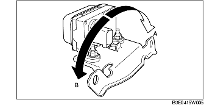
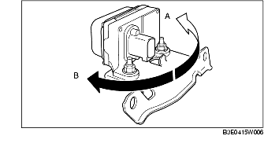

CONTROLE MULTISENSOR
B3E041543770W02
1. Zet het contact in stand LOCK.
2. Sluit het WDS of een vergelijkbare tester aan op diagnosestekker 2.
3. Selecteer de volgende PID's en controleer de zijdelingse versnelling en de gierhoek.
-
- LAT_ACCL (zijdelingse versnelling)
-
- YAW_RATE (gierhoek)
-
(1) Controle van zijdelingse versnelling
-
1) Controleer of de PID LAT_ACCL verandert als de multisensor naar links en rechts gekanteld wordt.

-
• Vervang de multisensor als er een probleem aanwezig is. (Zie VERWIJDEREN/PLAATSEN MULTISENSOR.)
-
Standaard
-
Als de sensor naar rechts gekanteld wordt (A):
-
LAT_ACCL verandert in positieve richting.
-
Als de sensor naar links gekanteld wordt (B):
-
LAT_ACCL verandert in negatieve richting.
-
(2) Controle gierhoek
-
1) Controleer of de PID YAW_RATE verandert als de multisensor naar links en rechts gedraaid wordt.

-
• Vervang de multisensor als er een defect aanwezig is. (Zie VERWIJDEREN/PLAATSEN MULTISENSOR.)
-
Standaard
-
Als de sensor naar rechts gedraaid wordt (A):
-
YAW_RATE verandert in positieve richting.
-
Als de sensor naar links gedraaid wordt (B):
-
YAW_RATE verandert in negatieve richting.